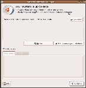
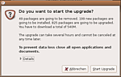
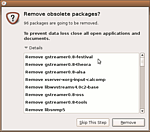

Wiki
Mitmachen
- Wikiartikel anlegen
- Howto anlegen
- Wiki-Referenz
- Wiki-Syntax
- Baustellen
- Artikelideen
- Ungetestete Artikel
- Ausbaufähige Artikel
- Fehlerhafte Artikel
- Rund ums Wiki
Konfiguration
- Backlinks anzeigen
- Exportieren
Upgrade auf Dapper
Archivierte Anleitung
Dieser Artikel wurde archiviert, da er - oder Teile daraus - nur noch unter einer älteren Ubuntu-Version nutzbar ist. Diese Anleitung wird vom Wiki-Team weder auf Richtigkeit überprüft noch anderweitig gepflegt. Zusätzlich wurde der Artikel für weitere Änderungen gesperrt.
Zum Verständnis dieses Artikels sind folgende Seiten hilfreich:
Dieser Artikel beschreibt, wie man sein Ubuntu-System auf die Version 6.06 LTS "Dapper Drake" aktualisiert.
Grundsätzliches¶
Ein Upgrade ist nur von einer Version auf die nächste möglich. Es ist nicht möglich, eine oder mehrere Versionen zu überspringen, indem man beispielsweise von Ubuntu 5.04 unter Auslassung von 5.10 direkt auf 6.06 LTS aktualisiert.
Es gibt zwei Möglichkeiten, das Upgrade vorzunehmen:
Auf "normalen" Desktopsystemen kann das Upgrade über das gewohnte Programm zur Systemaktualisierung gestartet werden
Auf Systemen ohne graphische Oberfläche lässt sich ein Upgrade in wenigen Schritten auf der Konsole vornehmen.
Wenn ein System sehr stark von der Standardinstallation abweicht, sind Probleme beim Upgrade möglich. Hinweise dazu finden sich unter Upgrade. Besonders Anwender von NVidia- und ATI-Grafiktreibern sollten sich anhand dieser Seite vergewissern, dass ihre Treiber korrekt installiert sind.
Vorbereitung¶
Backup¶
Vor einem Upgrade muss unbedingt eine Datensicherung vorgenommen werden. Dazu eignet sich
ein Partitionsimage mit partimage, eine Wiederherstellung des exakten Zustandes von vor dem Upgrade ist damit besonders einfach
laufende Sicherungen der Daten und Konfigurationen mit sbackup, wenn dies ohnehin verwendet wird. Im Problemfall hat man dann folgende Möglichkeiten:
Wiederherstellung des alten Systems durch Neuinstallation von Breezy, Rückspielen der Daten und Konfigurationen aus dem Backup und Installation der zusätzlichen Software mittels der gespeicherten Paketliste
Neuinstallation eines Dapper-Systems, Rückspielen der Daten aus dem Backup. Konfigurationen sollten selektiv zurückgespielt werden, da mit dem neuen Release wesentliche Änderungen in den Konfigurationsdateien möglich sind. Programme sollten nicht aus der Paketliste eingespielt werden, da diese auch in Dapper obsolete Software enthält.
Software überprüfen¶
Das Upgradeprogramm kümmert sich selbständig um die Entfernung von Software, die aus inoffiziellen Quellen stammt und die beim Upgrade Probleme bereiten könnte. Es weiß aber nichts von Software, die ganz ohne die Paketverwaltung installiert wurde.
Wer Programme ohne die Paketverwaltung oder Checkinstall installiert hat, sollte diese jetzt entfernen. Wer nicht weiß, worum es gerade geht, ist nicht betroffen.
Wer Treiber nachinstalliert hat, sollte sich bewusst sein, dass diese in bestimmten Fällen nach dem Upgrade nicht mehr funktionieren. Das betrifft insbesondere auch fehlerhaft installierte Grafiktreiber. Mehr dazu auf der allgemeinen Seite zu Upgrade.
Optional: Dapper-CD oder -DVD einbinden¶
Wer die neuen Pakete nicht herunterladen will, kann eine Dapper-Alternate-CD oder die DVD verwenden. Nach Einlegen der CD erfolgt eine Abfrage, ob die CD eingebunden und der Paketmanager gestartet werden soll. Man wählt hier den Start des Paketmanagers, schließt diesen aber sogleich wieder. Dann ist man bereit für das folgende Upgrade.
Falls nach dem Einlegen der CD nichts geschieht, kann man sie auch manuell zu den Paketquellen hinzufügen [2].
Upgrade mit Ubuntu (GNOME)¶
Hinweis:
 Nach der offiziellen Freigabe von Ubuntu 6.06 LTS, wird man über die gewohnte Aktualisierungsverwaltung auf die Möglichkeit eines Upgrades hingewiesen (siehe Bild rechts). Ein Klick auf "Aktualisieren" startet das Upgrade.
Zunächst werden die Release-Notes angezeigt, die Hinweise auf wichtige Änderungen enthalten. Es ist möglich, dass einzelne Dinge unter Dapper schlechter funktionieren als zuvor - auch das steht in diesen Hinweisen.
Weiter geht es mit "Upgrade".
Das System wird nun untersucht. Manche Pakete sind mit der neuen Ubuntu-Version nicht mehr kompatibel (das betrifft Pakete, die aus fremden Quellen installiert wurden und Pakete, die durch andere ersetzt wurden oder inzwischen überflüssig sind). Diese Änderungen kann man sich detailliert auflisten lassen. Wessen System aber nur offizielle Breezy-Pakete enthält, der muss diese Liste nicht studieren.  Nach Schließen aller geöffneten Anwendungen geht es weiter mit "Start Upgrade".
Nun folgt das eigentliche Upgrade. Dieser Vorgang darf nicht mehr unterbrochen werden.
Manche Programme werden von Dapper nicht mehr benötigt. Sie sind in Ubuntu noch vorhanden, werden aber nicht mehr offiziell unterstützt. Diese Pakete befinden sich künftig in der Universe-Sektion. Wenn diese Sektion nicht aktiv ist, werden die Pakete jetzt zum Entfernen vorgeschlagen. Da Dapper ohne diese Pakete voll funktionsfähig ist, kann man unbesorgt auf "Weiter" und dann auf "Remove" klicken. 
Nach Beendigung dieses Schrittes muss das System noch neu gestartet werden. Das eigentliche Upgrade ist damit abgeschlossen.
Falls nun einige Programme fehlen, die unter der alten Ubuntu-Version beispielsweise mit Automatix installiert wurden, müssen diese neu installiert werden. Dabei sollte man immer schauen, ob die Pakete inzwischen auch in das offizielle Ubuntu eingeflossen sind.
Upgrade mit Kubuntu (KDE)¶
Der gesamte Upgrade-Vorgang wird im Programm Adept durchgeführt. Dieses kann über "K-Menu -> System -> Adept (Package Manager)" geöffnet werden. Nach einer Passworteingabe lädt die Oberfläche.
Zuerst müssen die Paketquellen auf Dapper umgestellt werden. Dazu öffnet man den Paketquellen-Editor im Menü über "Adept -> Manage Repositories". Nun geht man alle Einträge durch und ersetzt breezy durch dapper. Dazu muss man einfach doppelklicken und nach der Eingabe mit ⏎ bestätigen. Fremdquellen deaktiviert man am besten mit "Rechtsklick -> Disable" oder ersetzt sie durch äquivalente Quellen für Ubuntu 6.06 LTS.
Als nächstes speichert man die Änderungen über "Apply" und beendet den Paketquellen-Editor mit "Close".
Man aktualisiert nun die Paketlisten über "Fetch Updates", bereitet das Upgrade vor mit "Full Upgrade" und startet es mit "Commit".
Nachdem alle Pakete heruntergeladen und installiert worden sind startet man den Computer neu.
Aktualisierung über die Konsole¶
Fremdpakete entfernen, Treiberinstallationen überprüfen (siehe Upgrade)
Quellenliste anpassen (Eine Vorlage findet man im Artikel sources.list, an sich muss nur überall breezy gegen dapper ausgetauscht werden)
Upgrade [3]:
sudo apt-get update sudo apt-get dist-upgrade sudo apt-get install ubuntu-desktop
Im letzten Schritt muss je nach Ubuntu-Variante das passende Paket gewählt werden: für Ubuntu ist es "ubuntu-desktop", für Kubuntu "kubuntu-desktop", für Xubuntu "xubuntu-desktop"
Neuinstallation der anfangs entfernten Software
optional: Entfernen verwaister Pakete
Neustart
Neuinstallation fehlender Treiber Upgrade
Problembehebung¶
Grafischer Login geht nicht (1)¶
Bei Leuten, die das Strom sparen Tutorial hier aus dem Wiki eingerichtet haben/hatten, kann es passieren, dass sie sich nach dem Upgrade auf Dapper nicht mehr grafisch einloggen können, sondern nur noch auf der Konsole über Strg + Alt + F1 . Abhilfe schafft, die Datei /etc/X11/gdm/PostLogin/Default auf der Konsole [3] zu löschen.
sudo rm /etc/X11/gdm/PostLogin/Default
Das dort aufgerufene Skript greift auf ein Programm des fglrx-Treibers zu, der in diesem Falle beim Upgrade deinstalliert wurde.
Grafischer Login geht nicht (2)¶
Bei dem Update wird evtl. ein Kernel-Update vorgenommen. Es kann vorkommen, dass der installierte Orginal-Treiber nvidia dann nicht mehr funktioniert, beim Booten bleibt der PC bei dem kubuntu-Bootscreen stehen. Ob das Problem am Treiber liegt, kann man leicht am X-Server-Log unter /var/log/Xorg.0.log erkennen; der X-Server meldet Probleme mit dem Treiber. Abhilfe schafft zunächst einen anderen Treiber auszuwählen und dann später den Treiber wieder zu installieren.
Wechseln zur Text-Konsole mit Strg + Alt + F1 und einloggen
Datei /etc/X11/xorg.conf mit einem Editor [4] öffnen
"Device"-Section suchen und in der Zeile
Driver "nvidia"
den Treiber z.B. durch nv oder vga zu ersetzen.
Die Datei speichern und den XServer starten mit
startx
Sollte dies funktionieren ausloggen bzw. den XServer beenden und mit der Textkonsole den Anmeldungsmanager (gdm, kdm, etc.) neu starten:
/etc/init.d/kdm restart exit
Mit dem ersten Befehl wird kdm neugestartet, mit dem zweiten die Textkonsole geschlossen.
Diese Revision wurde am 17. Juli 2008 00:42 von ubuntuusers.de erstellt.
- Erstellt mit Inyoka
-
 2004 – 2017 ubuntuusers.de • Einige Rechte vorbehalten
2004 – 2017 ubuntuusers.de • Einige Rechte vorbehalten
Lizenz • Kontakt • Datenschutz • Impressum • Serverstatus -
Serverhousing gespendet von